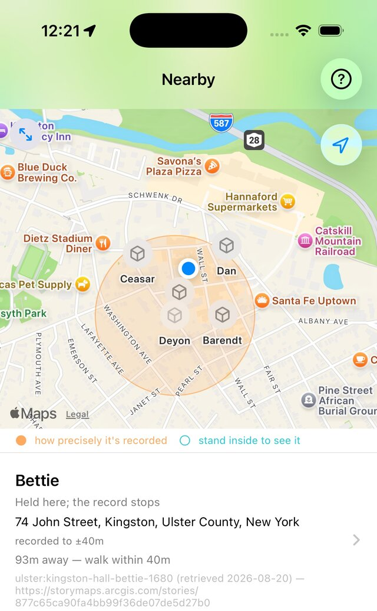

Haunted Geography
An iPhone app that places virtual memorial plaques, in the spirit of the Stolpersteine set into European streets, for people who were taken from a particular place. The plaques can be browsed on a map from anywhere, but the stone itself opens in the camera only when you are standing at the site.

Arriving
Whether you have arrived is decided by the server, not by the phone. A record can be placed on the map to within 2 km and opened on arrival to within 250 m, so a record that names someone without naming their door can still be read. The project's other name, hauntology, is Derrida's word for the presence of what is absent.
Where the names come from
Records come from archives, each translated into one common form by its own adapter.
- Stolpersteine on Wikidata: about 55,500 brass stones, CC0, with coordinates placed by the people who laid them.
- Ulster County, New York: enslaved people of the county, where slavery was legal until 1827, transcribed from the county Truth and Reconciliation Commission's "Mapping of Slavery" for Kingston, Woodstock and Hurley.
The anchor is what the record actually attests: a disappearance, a death, or, where the archive counted people as property and then fell silent, the fact that the record stops.
Care with the record
- Every plaque cites its source, and the citation is visible to whoever reads the plaque.
- The original archive record is kept verbatim beside the translation, so a mistranslation stays auditable.
- A record that cannot be translated is skipped and reported, never filled in with a plausible guess.
- Corrections can only be appended: the database keeps revisions and refuses edits and deletions.
- A hand-transcribed name has no upstream archive to correct it, so each one needs a person to sign for it before it appears.
- The memorial is for those who did not return: a manumission is evidence of survival, and that record is refused.
The coordinate is the hard part
Of the other sources the project weighed, only OpenStreetMap's Stolpersteine tags carry a coordinate; the rest give an address as text or no location at all. The Stolpersteine records are used because their coordinate is the stone's own installed position, so there is no geocoding step to get wrong.
iPhone: SwiftUI, ARKit, CoreLocation
Python, FastAPI, PostGIS
Wikidata Stolpersteine (about 55,500 stones)
Ulster County, New York